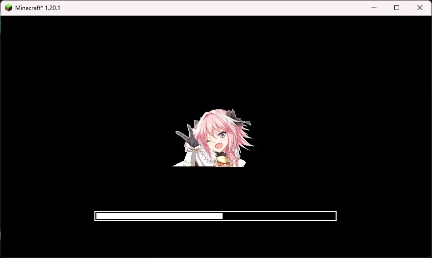
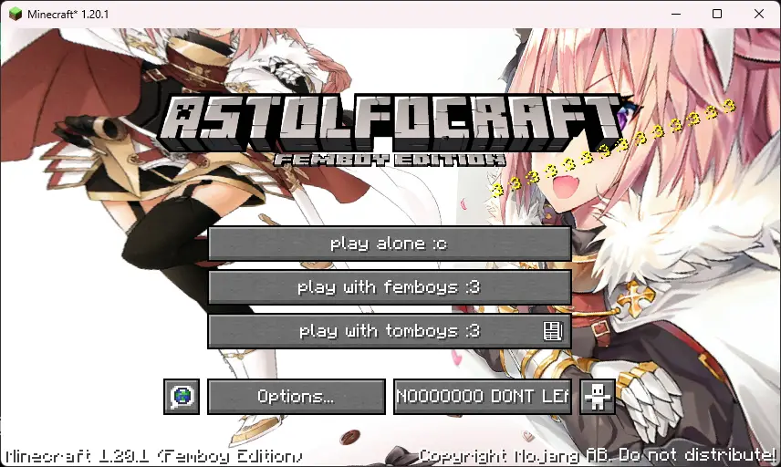
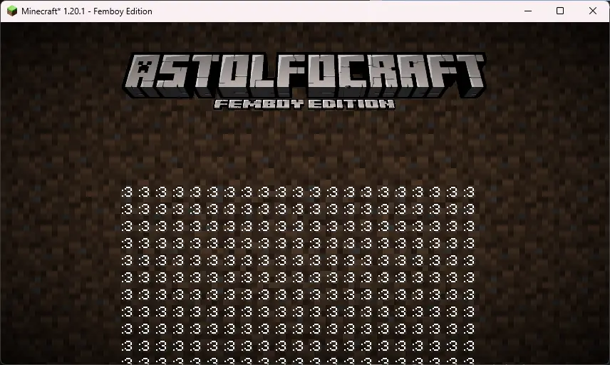

Astolfo Resource Pack
Minecraft :3 edition let's gooo
This resource pack changes the Minecraft loading screen, logo, totem of undying and ending screen to be more Astolfo themed.
  Takedown
This item was taken down on 2023/08/02 at 00:02 UTC because of the following reason: This item was connected to Zenbooda. Talking about this item around Akatsuki is not a good idea as they'll block you.
This item was set back to visible on 2024/02/02 because of many confused people on my TikTok being unable to find the project.